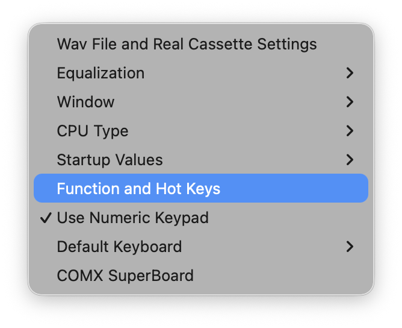
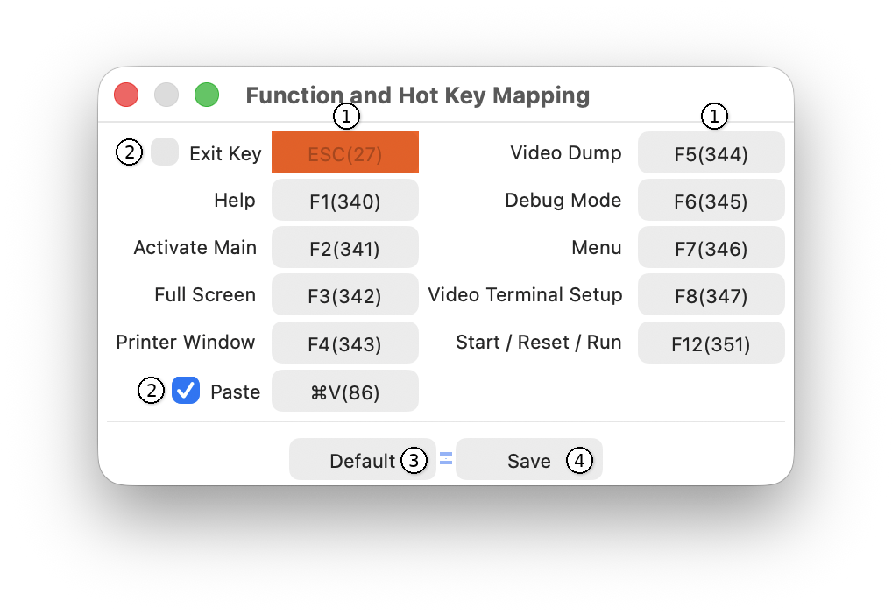

The following Function and Hot Keys (except CTRL V) can be used in any Emma 02 window. In some cases, the function depends on the emulated computer.
To change the keys defined below, use the menu item shown below:

In the Function and Hot Key Mapping window that opens, any of the PC keys (1) can be changed. The Exit key and Paste features (2) can be enabled or disabled:

To change a key, first select the button to be changed (1). The text Press Key will appear on the button. Then press a PC key to assign. Any PC key that is mapped twice will be shown in red. Keys already used by one of the emulators are shown in orange.
Avoid double mapping, as the emulator cannot handle this. Re-using emulator keys will work, but may disable proper operation of that key in some emulators. Using SHIFT will in most cases still work in the emulators. For example, when enabling ESC as exit key, SHIFT ESC will still function as the COMX ESC key.
The Paste key is always defined as a Control key on Windows and Linux, and as a Command key (⌘) on macOS. The default key for the paste feature is V.
To restore the default Emma 02 hot key mapping, press the Default button (3) and then press Save (4) to store the changes.
The function of F12 depends on the selected computer and emulator state:
Note: The use of F12 for multiple functions reflects the behaviour of the original hardware systems, where a single switch or control often served different purposes such as RUN, RESET or START. Emma 02 maps these functions to a single key depending on the selected system and current state.
| Key | Function | Used for |
| ESC | Exit emulated computer (only when enabled via Settings / Function and Hot Keys). | All computers |
| F1 | Help | All computers |
| F2 | Activate main computer window | All computers |
| F3 | Toggle full screen mode | All computers |
| F4 | Show printer output window | All computers with printer emulation |
| F5 | Write emulated video to the file specified as VideoDump | All computers with video emulation |
| F6 | Toggle debug mode | All computers |
| F7 | Show runtime menu (change disk/cassette files, load software, activate panels when using command line mode) | All computers |
| F8 | Video terminal setup | All computers with VT100 terminal emulation |
| F12 | Switch RUN mode on or off | Cosmac Elf Cosmac VIP Cosmac VIP II Infinite UC1800 (start only) JVIP Netronics Elf II Quest Super Elf VELF |
| F12 | Reset computer | CDP18S020 Evaluation Kit COMX-35 COMIX-35 Cosmac Elf 2000 Cidelsa Arcade Game Console Conic (Apollo, Mustang, MPT-02 and M1200) Cosmicos - COSmac MIcro COmputer System Cybervision 2001 ETI-660 FRED 1 FRED 1.5 HEC1802 HUG1802 Macbug Membership Card Oscom Nano PECOM 32 PECOM 64 Pico/Elf V2 RCA COSMAC Computer Game System RCA COSMAC Microboard Computer RCA MicroDisk Development System MS2000 RCA Microboard Computer Development System RCA Studio II RCA Studio III RCA Studio IV RCA Video Coin Arcade Game Console SBC1802 Studio 2020 Telmac 1800 Telmac 2000 Telmac TMC-600 VIP2K Membership Card VIS1802 VT1802 Visicom COM-100 |
| F12 | Start computer | All computers (only from main GUI when no computer is running) |
|
CTRL V (Windows/Linux) ⌘ V (macOS) |
Paste clipboard content to video or terminal window | Most computers, depending on video or terminal emulation |